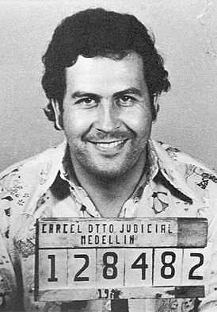
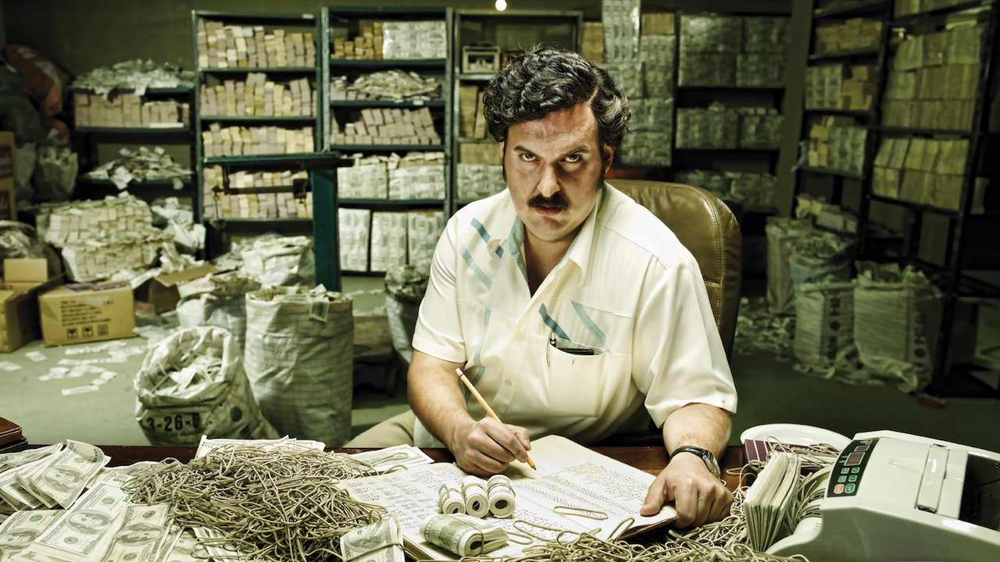
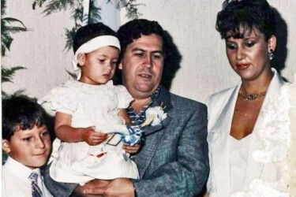

Պաբլո Էսկոբար

| Ծնվել է |
դեկտեմբերի 1, 1949 |
| Ծննդավայր |
Ռիոնեգրա, Անտիոքիա |
| Մահացել է |
դեկտեմբերի 2, 1993(44 տարեկան) |
| Մահվան վայր |
Մեդելյին, Անտիոքիա |
| Գերեզման |
Itagüí |
| Քաղաքացիություն |
Կոլումբիա |
| Մայրենի լեզու |
իսպաներեն |
| Կրոն |
Հռոմի Կաթոլիկ եկեղեցի |
| Մասնագիտություն |
թմրաբարոն, քաղաքական գործիչ և ձեռնարկատեր |
| Ամուսին |
اريا فيكتوريا هيناو? |
| Զբաղեցրած պաշտոններ |
Կոլումբիայի ներկայացուցիչների պալատի անդամ և տնօրեն |
| Անդամություն |
Մեդելյինի կարտել |
| Երեխաներ |
Սեբաստիան Մարոքին և Մանուելա Էսկոբար |
Պաբլո Էմիլիո Էսկոբար Գավիրիա
(իսպ.՝
Pablo Emilio Escobar Gaviria,
դեկտեմբերի
1,
1949
Ռիոնեգրա ,
Անտիոքիա -
դեկտեմբերի
2,
1993
Մեդելյին,
Անտիոքիա),
կոլումբիացի
թմրաբարոն, Մեդելինյան կոկաինային
կարտելի
առաջնորդ։
Համարվել է պատմության ամենահարուստ հանցագործներից մեկը՝ վաղ 90-ականներին ունենալով շուրջ 30 միլիարդ
ԱՄՆ դոլարի
կարողություն:
Կոկաինի
առևտրի արդյունաբերություն մուտք է գործել վաղ 1970-ականներին՝ ոլորտի բազմաթիվ
այլ ներկայացուցիչների հետ ձևավորելով Մեդելինյան կարտելը։ Որոշ ժամանակ անց կարողացել է տիրել
ԱՄՆ
ներմուծվող
կոկաինի 80 % մասնաբաժնին: Համերկրացիների և հատկապես չքավոր խավի շրջանում վայելել է մեծ ժողովրդականություն,
հովանավորել է բազմաթիվ բարեգործական ծրագրեր, ֆինանսավորել
ֆուտբոլային
ակումբներ և այլն:


Հանցավոր գործունեության սկիզբ
Իր ժամանակի մեծ մասը Պաբլոն անցկացնում էր Մեդելինի աղքատ թաղամասերում, որն էլ եղել է իր
հանցագործությունների բույնը։
Նա սկսեց այնտեղի գերեզմանոցներից գերեզմանաքարեր գողանալ։ Ջնջելով դրանց գրությունները դրանք վաճառում էր
պանամացի դիլլերներին։ Հետո նա սկսում է վաճառել ծխախոտ և մարիխուանա, կեղծում է վիճակախաղի տոմսեր։
Այնուհետև նա ստեղծում է ոչ շատ մեծ խմբավորում և առևանգելով մարդկանց շքեղ ավտոմեքենաները և վաճառելով դրանց
մասերը վաստակում էր իր ապրուստը։ Ավելի ուշ նա որոշում է զբաղվել ավազակությամբ։ 1971 թվականին Պաբլոյի մարդիկ
առևանգում են կոլումբիացի հայտնի արդյունաբերող Դիեգո Էչավարիուին։ Նրան երկար խոշտանգումներից հետո սպանել են։
Նրանք փորձել են ստանալ փրկագին, բայց անհաջողության են մատնվել, և խեղդելով իրենց զոհին, նրան նետել են
աղբարկղը։ Էսկոբարը բացահայտ հայտարարել է, որ ներգրավված է Դիեգոյի սպանության գործի մեջ։ Մեդելինի աղքատ
բնակիչները տոնում էին Դիեգոյի և իրենց երախտագիտությունն էին հայտնում Էսկոբարին։
1 տարի հետո 22 տարեկան Պաբլոն դառնում է Մեդելինի ամենահայտնի քրեական հեղինակությունը։ Նրա խմբավորումը
շարունակում է աճել, և Պաբլոն որոշում է սկսել նոր քրեական բիզնես, որին պետք է կապված լիներ իր ողջ հետագա
կյանքում։
1976 թվականի մարտին Պաբլոն ամուսնանում է 18 տարեկան իր ըներուհու` Մարի Վիկտորիա Էնեո Վեխոյի հետ։ Մեկ ամիս
անց ծնվում է նրանց առաջին երեխան՝ Խուան Պաբլոն, իսկ երեք տարի անց նրանց աղջիկը՝ Մանուելան։
Պաբլո Էսկոբարի թմրաբիզնեսը կարճ ժամանակում տարածվում է ամբողջ Հարավային Ամերիկայում։ Նա ԱՄՆ-ում սկսեց
զբաղվել թմրանյութի մաքսանենգությամբ։
Բովանդակություն
- Հանցավոր գործունեության սկիզբ
- Գործունեության վերջն ու մահը
- Ընտանիք
- Հետաքրքիր փաստեր
- Պաբլո Էսկոբարի կյանքի կանոնները
- Ես միշտ հավաստիացրել եմ` իմ հարստությունը կապված չէ թմրանյութերի հետ։ Ես համեստ մարդ եմ, ով զբաղվում է
ծաղիկների արտահանմամբ։
- Սիրում եմ ցլերին, բայց ավելի շատ ավտոմեքենաներ եմ սիրում։ Իմ ընտանիքում ընդհանրապես արագություն սիրում
են։ Օրինակ եղբայրս` Ռոբերտոն, շատ է սիրում հեծանիվներ, ուստի նրան եմ նվիրել հեծանիվներիս գործարանը։
- Այս կյանքում ամեն ինչին փոխարինող կգտնեմ, բացի կնոջիցս և երեխաներիցս։